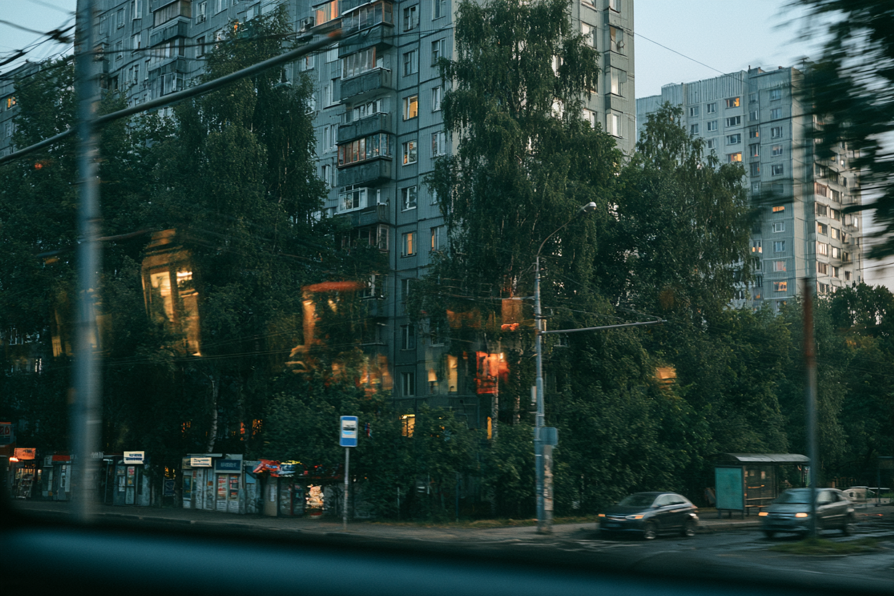
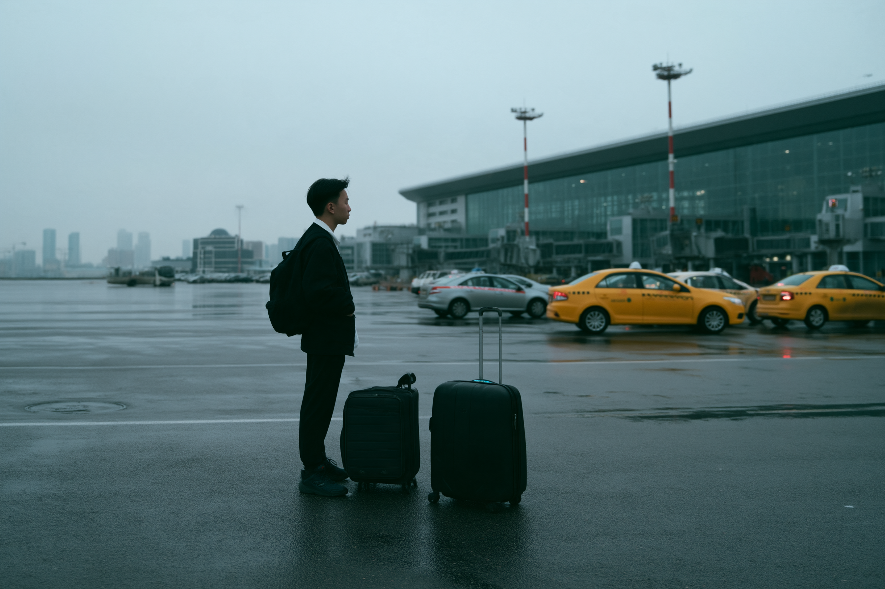
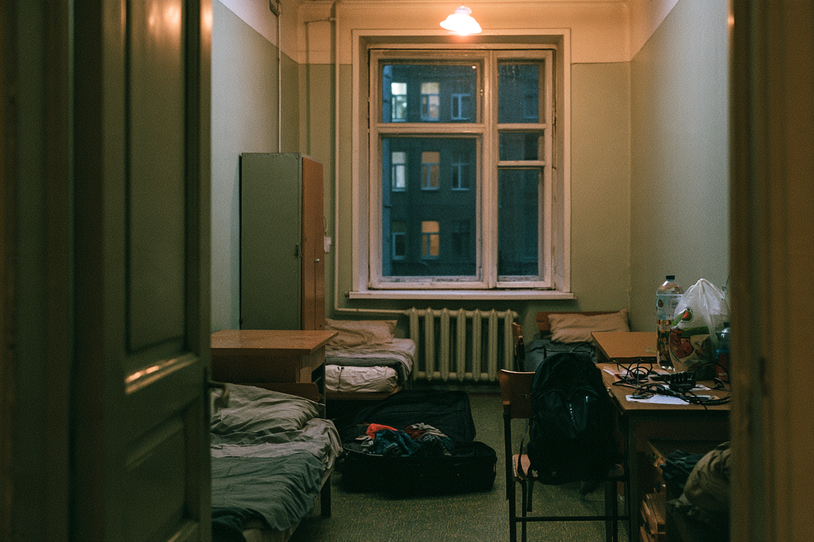
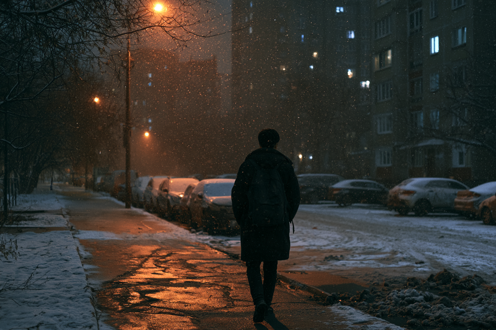
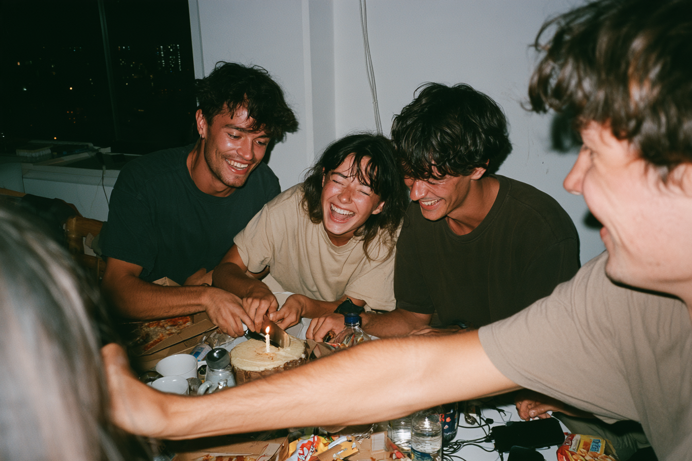
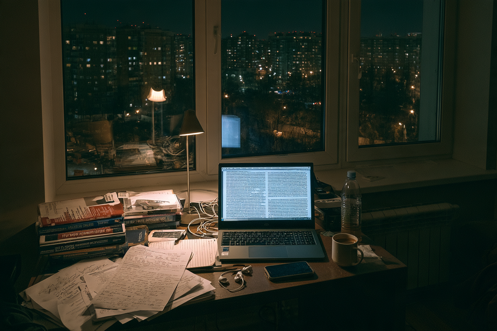
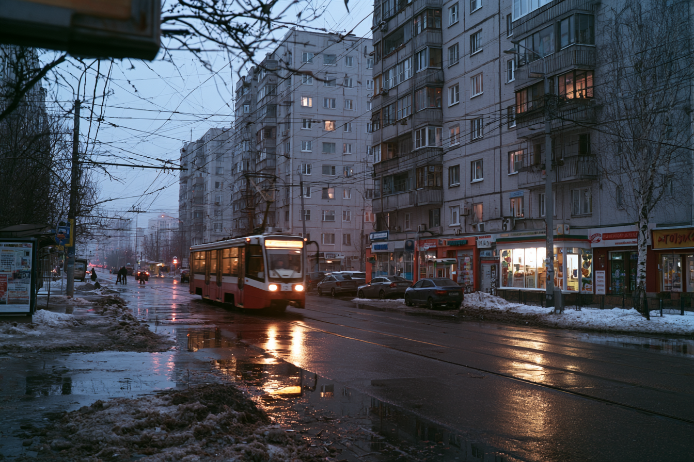
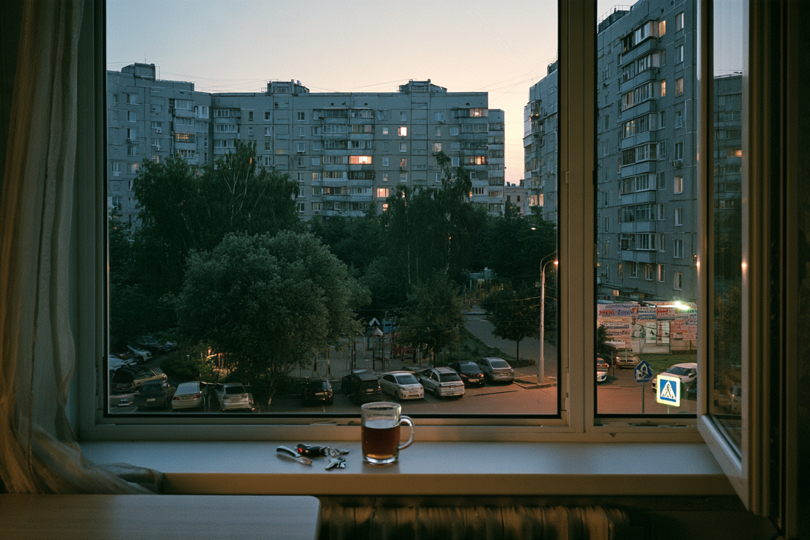
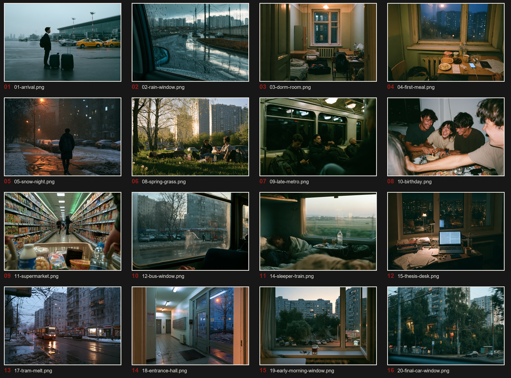
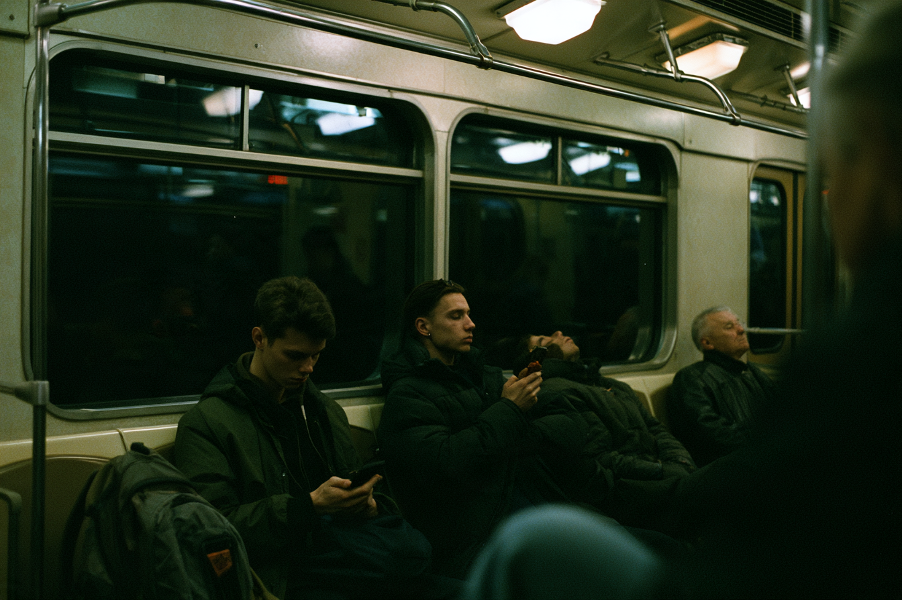

PLACE
Contemporary Russia, 2019–2026. Older architecture could remain, but the world could not feel historically frozen.

AIGC VISUAL CASE STUDY / 01
СЕМЬ ЗИМ
2019—2026
JIAHUI HONG
MOSCOW / 55.7558 N
01 / BRIEF
SEVEN WINTERS reconstructs seven years of living and studying in Russia through AI-generated photography. It doesn't attempt to reproduce specific photographs. Instead, it works from what stayed behind: a dorm room, supermarket light after dark, snow beside apartment blocks, a metro ride, a window before sunrise.
The result sits between a student diary and a fictional archive. Russia is present as an ordinary, lived place rather than an image of spectacle or nostalgia.
02 / SELECTED WORKS




“Not a record of what Russia looked like, but an attempt to remember how ordinary life felt.”



03 / THE PROBLEM
Early generations kept collapsing Russia into familiar visual shortcuts: permanent snow, obsolete interiors, monumental concrete and dramatic cinema lighting. Some images looked good on their own but belonged to the wrong decade—or to no real place at all.
The task changed. I wasn't trying to generate the most beautiful frame. I was deciding which frames could exist together without breaking the memory.
04 / VISUAL SYSTEM
Contemporary Russia, 2019–2026. Older architecture could remain, but the world could not feel historically frozen.
Observational rather than staged. Uneven framing, natural distance and frames where very little happens.
Overcast daylight, fluorescent interiors, window light and practical lamps after dark.
Muted cold tones, restrained saturation and occasional warmth inside private rooms.
05 / CURATION

The starting folder contained 24 images. Eight were removed because they repeated a scene, felt too polished, or weakened the sequence. The final edit kept 16.
06 / SEQUENCING

07 / OUTCOME
The final edition uses aggressive crops, black pages, contact-sheet fragments and quiet gaps. The sequence begins by looking at Russia from outside, settles into rooms and routines, then ends from inside a moving car.
OPEN THE 26-PAGE ZINE ↗AI DISCLOSURE
All photographic images in this project are AI-generated. They are fictional visual reconstructions informed by personal experience and visual research—not documentary records of real events.